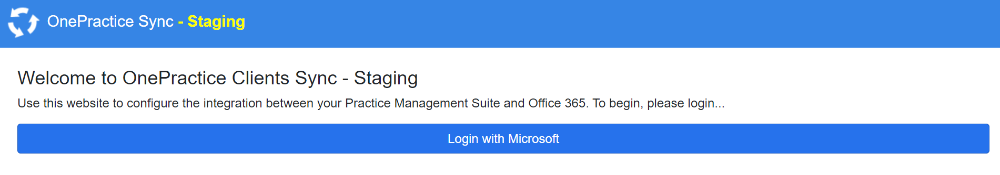
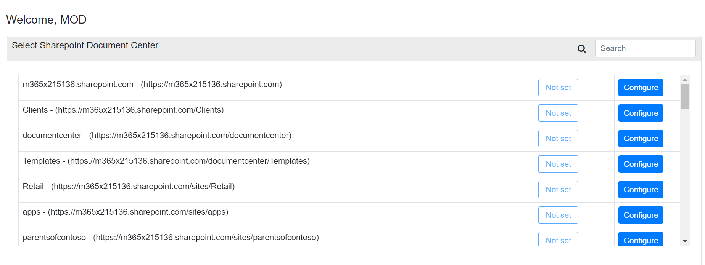
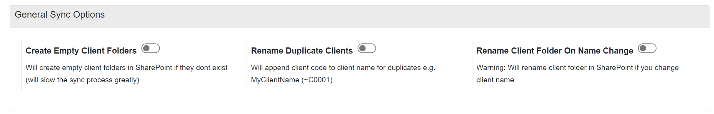
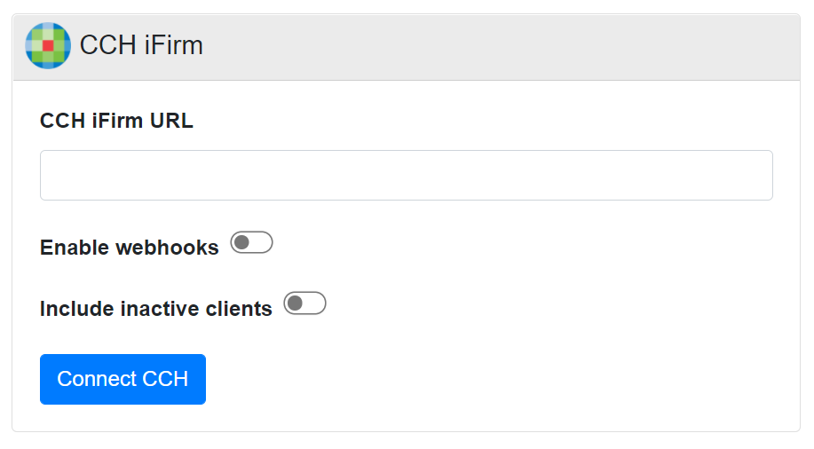
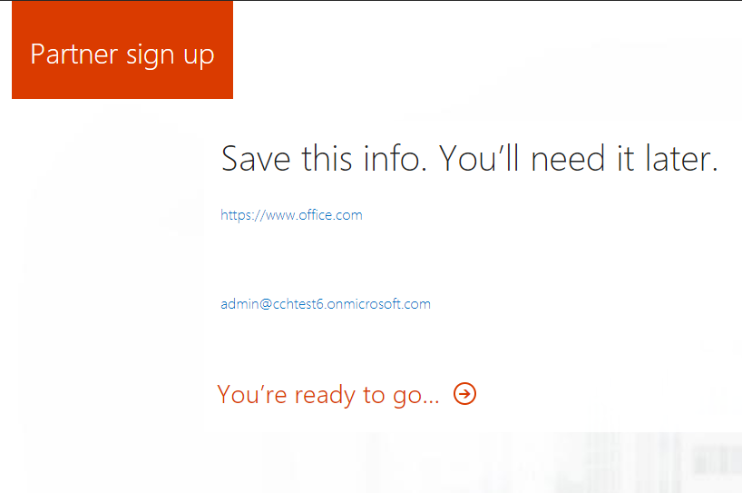
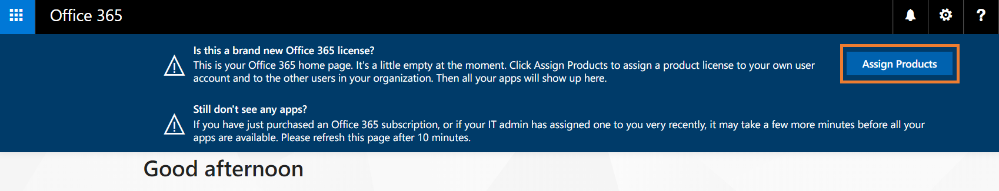
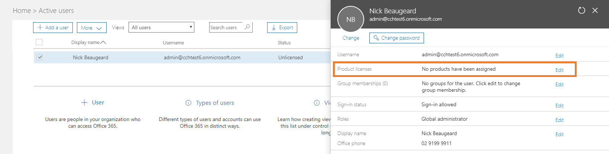
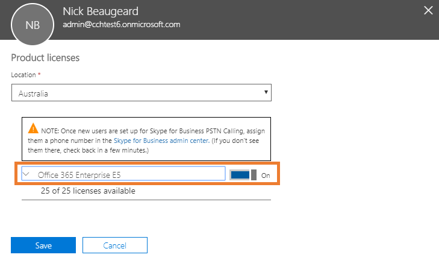

|
<< Click to Display Table of Contents >> Navigation: OnePracticeSync > Connecting to CCH iFirm |
The following procedure shows how to connect and configure your OnePractice Environment with CCH iFirm
In this procedure, you will be guided through creating an Office 365 Trial. Use the checklist in Installation of the CCH iFirm Connector to record details from below.
Step |
Instructions |
Screenshot |
|---|---|---|
1 |
Ensure you have Provisioned your OnePractice Environment |
|
2 |
Navigate to https://practicesync.azurewebsites.net and click Login with Microsoft |
 |
3 |
Enter your Login Credentials for your Office 365 Environment Admin Account.
If Asked, click Accept
|
|
4 |
Select the SharePoint site you wish to configure and click the configure button
|
 |
5 |
Choose your General Sync Options as follows:
1. Create Empty CLient folders creates empty folders for all clients and slows down the initial sync. 2. Reame duplicate clients ensures there are no duplicate clients and uses the client code to differentiate 3. Rename Client folder on name change renames the client folder if you change the name in your practice manageemnt solution/
Recommended settings are shown |
 |
6 |
Next Enter your CCH iFirm URL, click enable Webhooks and if you wish, choose to enable inactive clients.
When ready click Connect CCH |
 |
7 |
When you see the You're ready to go link appear, the platform has been provisioned. Click on this link. |
 |
8 |
The admin screen will appear. Click Assign Products. |
 |
9 |
Select the admin user and click Edit in the Product licences section. |
 |
10 |
Select your location from the dropdown.
Then, click on the dial next to Office 365 E5 to turn it on. This will also turn on all of the individual apps below.
Scroll down, click Save, then Close. |
 |
11 |
Wait at least 30 minutes for Microsoft to complete provisioning services. |
|
*** PROCEDURE COMPLETE *** |
||